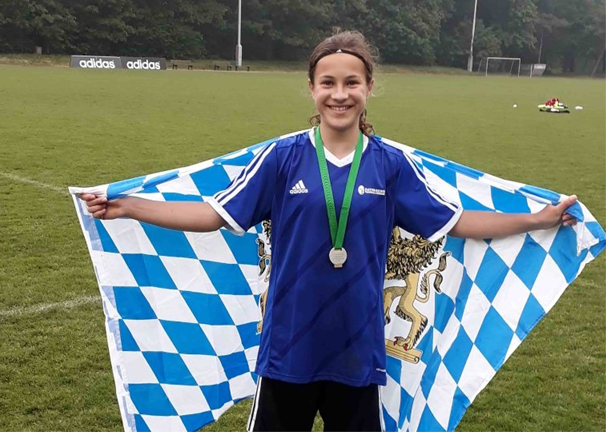
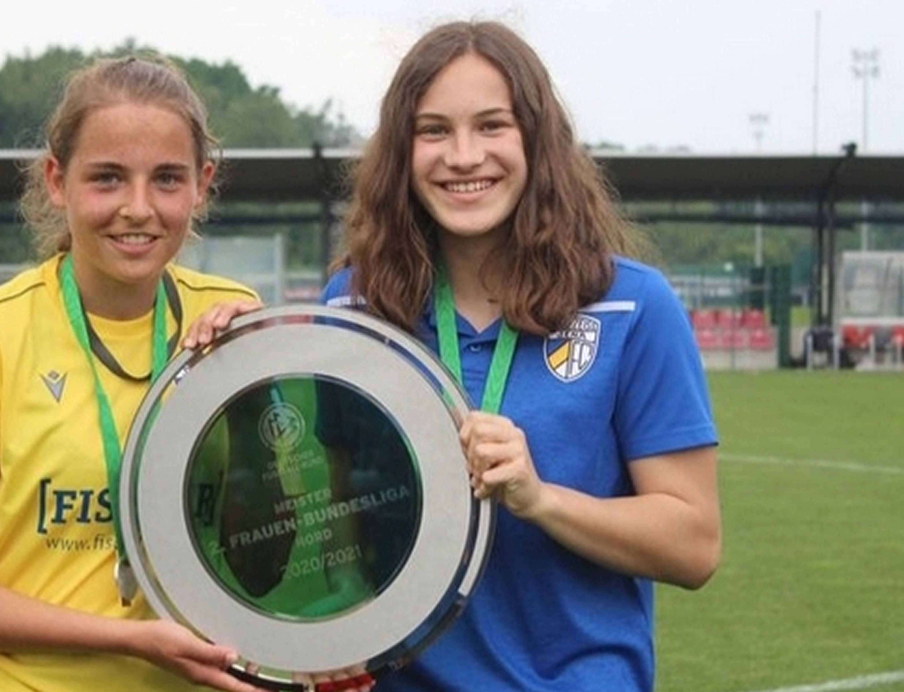
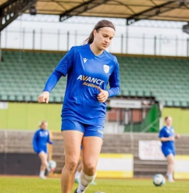
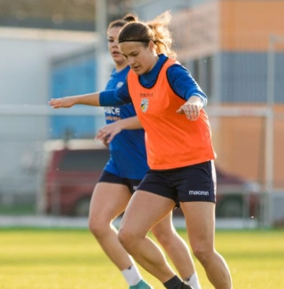
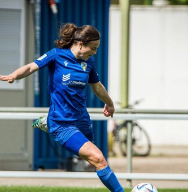

Hannah gewann mit der Bayernauswahl drei mal die Süddeutsche Meisterschaft...
Werdegang
Ein paar Zahlen der aktuellen Saison
4
Tore18
Einsätze973
SpielminutenDie Highlights meiner Laufbahn

3X Süddeutsche Meisterin
DFB Länderpokal Siegerin
2018 holte Hannah mit der Bayernauswahl den Titel “Deutscher Meister” in Duisburg...


Meister der 2. Frauen- Bundesliga
In der Saison 2021/22 holte Hannah mit dem FC Carl Zeiss Jena den Meistertitel...
Die Sponsoren meines Vereins


